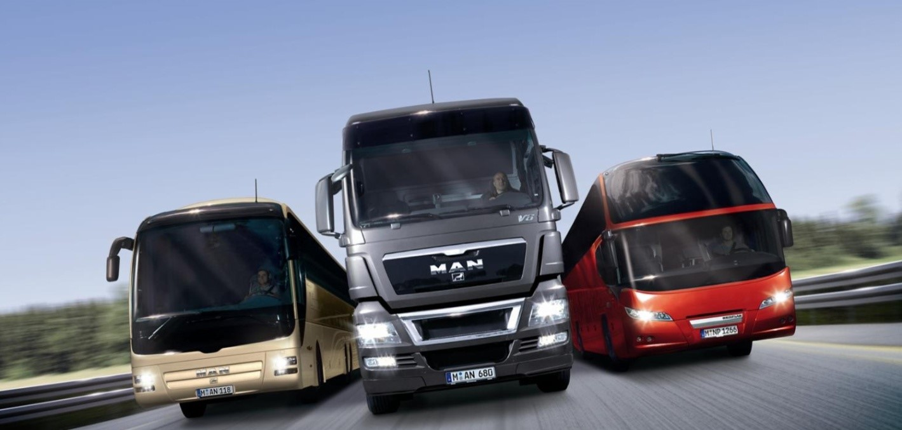

Maintenance Engineer Intern @ MAN Trucks

Highlights & Achievements
• Performed troubleshooting and maintenance for increasing the clamping force of a spindle in VMC, reduced wear, tear and noise of rotating elements.
• Learned and performed cycle time analysis for different machines to reduce the takt time and lead time.
• Trained other interns by demonstrating machining operations and explaining working principles of all the machines on the engine and axle line.
• Learned and performed cycle time analysis for different machines to reduce the takt time and lead time.
• Trained other interns by demonstrating machining operations and explaining working principles of all the machines on the engine and axle line.
Software & Skills
Roles & Responsibilities
- Conducted detailed research on Horizontal Milling Center Machines and Vertical Milling Center Machines and its components. It included Machine body, CNC system, Electrical cabinet, Pneumatic system, Coolant system, Guards, Tool magazine.
- Computed a detailed report and presented my project on Hydraulics, Pneumatics and Kinematics to team members and departmental head upon internship completion. Studeied equipment from Bosch, EATON and Yuken
- Studied Finish line for engines to focus on removing a small amount of material and perform finishing operations. I learned 8 Spindle Boring machine, 10 Spindle Drilling and Tapping machine, Piston Bore Honing, etc.
- Observed and scrutinize Semi-Finish for 6 different types of MAN engines that helped me to understand how a large amount of material is removed from engine block castings. It involved detailed processes from receiving material from the vendors to mounting it various HMC & VMC using jigs & fixtures.
- Support Dead Axle and Engine Cylinder Head team for routine machine maintenance operations.